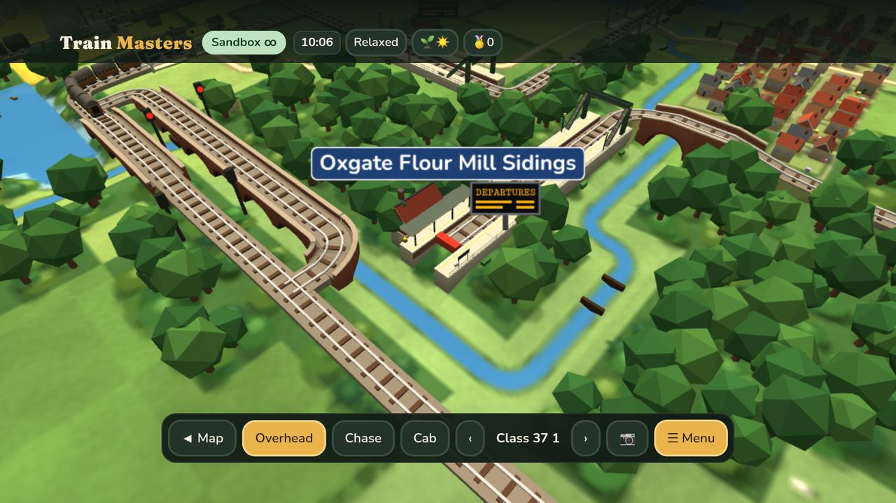
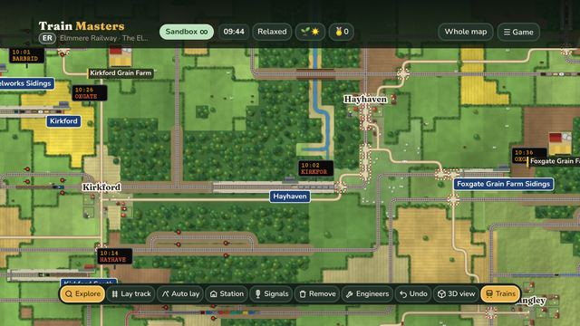
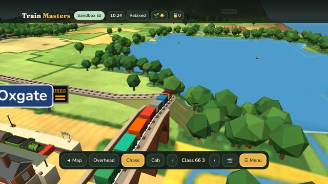
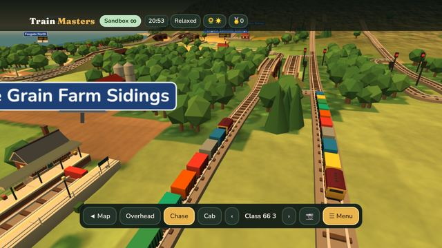
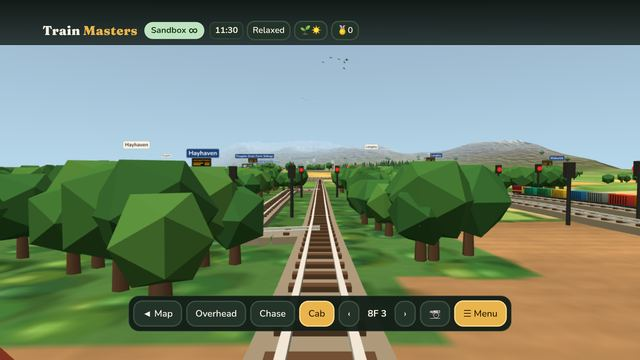
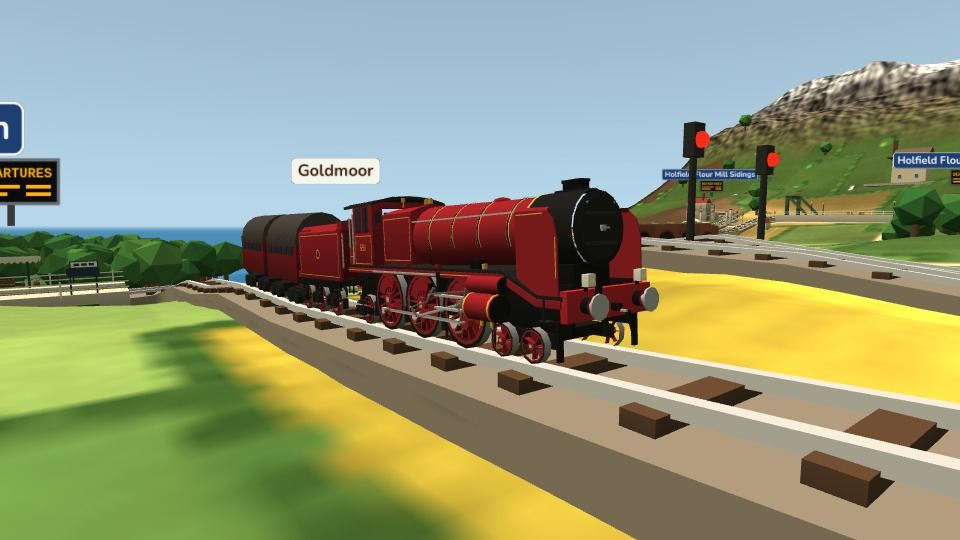
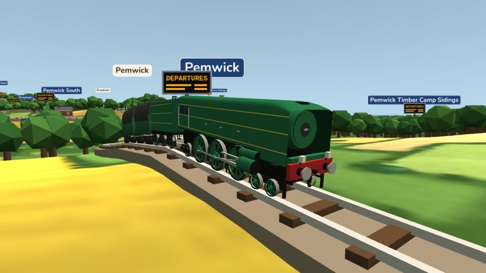
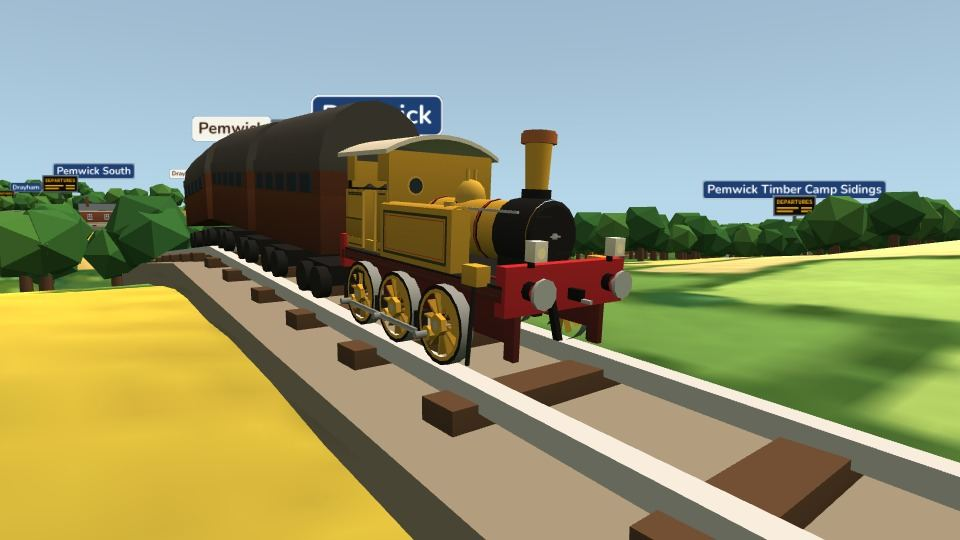

A cozy railway-building game. Lay track between little country towns, put in stations, and watch real classic British and world engines bring your railway to life.
No sign-up, no adverts. Your railway is saved in your browser. Works on computers, tablets and phones.

No rush and no pressure: build at your own pace, or let the game build for you and just enjoy the trains.
Draw lines across hills and rivers, with bridges, tunnels, junctions, passing loops and signals.
The Pannier tank, Black Five, Castle, the A3 Pacific, the A4 streamliner, the Deltic, the HST and more.
Ask for a network and watch it appear, piece by piece: every town linked, with stations and trains.
Morning light, lamp-lit evenings, seasons and weather, and satisfying, chunky sounds.
Plan on the 2D map, then fly round in 3D, chase a train or ride in the cab.
Carry timber, grain and flour between farms, mills and towns. Contracts and goals if you want them.




Famous engines in fine detail, with moving rods and their own sounds. They are part of Train Masters Pro, in the Fire TV and Fire tablet version, along with countryside life, driving it yourself, a sandbox and scenarios. There is also a growing line of famous engines, one at a time: the Royal Scot, the Britannia, the Peppercorn A1, Stephenson's Rocket and the little Class 08 shunter.



The browser version is free and has the whole railway to build and run.
On your Fire TV or Fire tablet, it plays from the sofa with the remote.